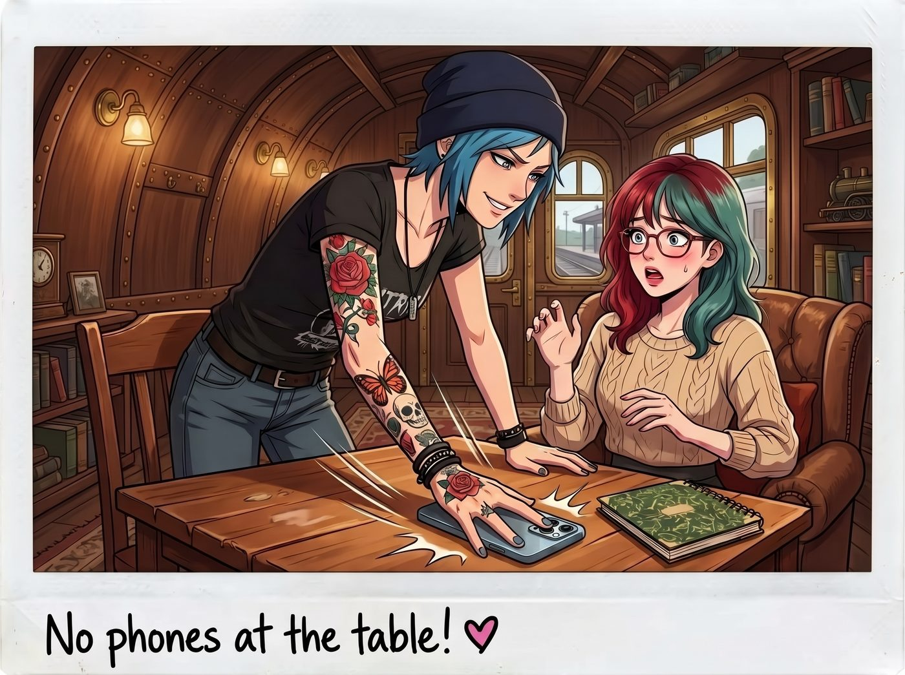

免費的建議

「啪！」
一聲清脆的悶響，Chloe 的手掌重重地拍在桌面上，把 Lily 那支還亮著螢幕的手機整個蓋住，順手翻了個面，螢幕朝下扣在桌上。
「Chloe 學姐？」Lily 愣了一下，手指還停在半空中，剛才那句「對不起，母親」只打了一半。
「等一下，先別回。」Chloe 沒有把手機拿走，只是用一根手指壓著它，居高臨下地看著 Lily，嘴角勾起一抹痞氣的壞笑，「街頭生存法則第一條：誰先急，誰就輸了。妳以為秒回能讓他們停止那套情緒勒索？錯了，實習生。秒回只會讓他們覺得妳是一台二十四小時待命的自動販賣機。」
一、薛丁格的已讀
Chloe 雙手撐在桌面上，眼神銳利得像是在傳授某種地下幫派的火拚秘訣：
「所以我們來玩『薛丁格的已讀』。晾著他們。十二個小時起跳。讓他們自己去猜妳在幹嘛。反正天不會塌下來，對吧？」
她把手指從手機上移開，往 Lily 那邊推了半寸：「當然，要不要照做，妳自己決定。老娘只是給個建議。」
Lily 呆呆地看著那支扣在桌上的手機。她那顆習慣了即時響應、合規處理的行政大腦，第一次接觸到這種純粹基於心理戰的流氓戰術，竟然感到了一種詭異的震撼。
二、服務級別協議
「Chloe，妳的街頭智慧雖然有效，但執行起來太過粗鄙，缺乏可延續的法理基礎。」
Victoria 端著一杯剛煮好的 Espresso 走了過來，優雅地拉開椅子坐下。她用一種審視商業報表的眼神，慢條斯理地提出了另一套截然不同的方案。
「Lily，妳的問題在於，妳把他們當成了不可抗力。」Victoria 輕輕攪拌著咖啡，語氣冷靜而專業，「但在我們家那種地方，沒有什麼是不能被放上談判桌的。我當初跟我爸談工坊的投資，就是這樣談下來的：錢可以拿，但經營權是我的。妳要做的，是把這段關係降級成一場平等的合作。」
她伸出塗著精緻法式美甲的手指，輕輕點了點桌面：
「下次他們再拿死不瞑目來壓妳，妳不要道歉。直接亮出底線。告訴他們：我願意每個月回家吃一次飯，時長不超過兩小時。但前提是，飯桌上不准評論我的工作、我的朋友和我的生活。一旦越界，我就當場離席。」
Victoria 抬起眼眸，直視著 Lily：「把條件說在前面。他們接受了，才有下一步。這不叫不孝，這叫專業。」
車廂裡安靜了足足一分鐘。
Lily 坐在那裡，大腦瘋狂運轉。一個晾著、一個談判——她一直以為自己只能在防禦中尋找漏洞，從來沒想過，這段關係的節奏和邊界，是可以由她自己來定的。
三、諮詢費
「Chloe 學姐……Victoria 學姐……」
Lily 緩緩抬起頭，推了推圓框眼鏡。那雙眼睛裡，此刻正閃爍著一種純粹的、屬於行政黑魔法師的極致感激之光。
「妳們的指導，簡直是社會工程學的藝術品。」她的聲音依然軟糯，語速卻開始加快，帶著一種危險的興奮，「為了回報妳們今天提供的無價諮詢，我必須立刻對妳們的資產進行一次深度合規優化，作為諮詢費的支付。」
Chloe 和 Victoria 臉上的得意笑容，瞬間僵住了。
「Chloe 學姐，」Lily 轉過身，十指已經懸停在筆記本電腦的鍵盤上，「我剛才想到一個絕妙的方案。只要把您那輛猛禽皮卡重新登記為奧林匹亞國家森林的『野生動物保育巡邏輔助車輛』，您不僅能申請州立燃料稅減免，每年還能領取一筆保育巡邏補貼。我現在就開始起草那份一百二十頁的申請書，只需要您每週去森林裡巡邏三次、填寫動物目擊日誌……」
「等……等一下……」Chloe 嚥了一口唾沫，背後的冷汗冒了出來。
「還有 Victoria 學姐。」Lily 根本沒停下，眼神狂熱地轉向名媛，「您的底線談判法給了我靈感。我重新研究了您家族信託的底層條款。如果把您祖父上次那通威脅除名的電話，界定為『對信託受益人構成不當施壓的違約行為』，我們或許可以向信託管理委員會提出正式申訴，要求他今後所有涉及您個人生活的聯繫，都必須經由律師書面轉達。我已經列出了四十七條可援引的判例……」
警報。最高級別警報。
Chloe 和 Victoria 驚恐地對視了一眼。她們太熟悉這個節奏了。一旦讓這個小瘋子把這些文件提交上去，Chloe 下半輩子就得每週去森林裡數麋鹿，Victoria 則要跟整個家族信託委員會打一場曠日持久的書面戰爭。
四、落荒而逃
「那什麼！」Chloe 猛地從椅子上彈了起來。她一眼看到了正拿著相機在旁邊憋笑的 Max，彷彿看到了救命稻草。
「Max！哇哦！妳這台寶麗來的快門機械結構真是太迷人了！」Chloe 一個箭步衝過去，一把摟住 Max 的肩膀，拼命地使眼色，眼睛眨得都快抽筋了，「我突然對光圈和曝光值產生了無法抑制的渴望！快！我們去外面，教我怎麼拍大自然！現在！立刻！」
另一邊，Victoria 的反應一點也不慢。她顧不上自己穿著昂貴的真絲睡袍，直接衝進廚房區，一把抓起一條沾滿麵粉的圍裙套在身上。
「Kate！親愛的 Kate！」Victoria 誇張地抓起一把無麩質麵粉，對著正在烤餅乾的 Kate 露出了無比虛偽且狂熱的求知慾，「我突然意識到，我的人生不能只有米其林餐廳！我必須立刻學習如何計算杏仁粉的吸水率！教我揉麵！快！不要讓任何世俗的法律文件打擾我們神聖的烘焙時刻！」
Kate 被突如其來的熱情嚇得手一抖，麵粉撒了一地。她看著 Victoria 拼命擠眉弄眼的滑稽模樣，再看看那邊正拖著 Max 往門外跑的 Chloe，終於忍不住噗嗤一聲笑了出來。
五、免費的
Max 也笑得肩膀直抖。她反手按住 Chloe 想把她拖出門的力道，轉過頭，看向依然停在鍵盤上方、一臉無辜和不解的 Lily。
「好啦，妳們兩個適可而止吧。」Max 笑著走過去，輕輕地、不容拒絕地把 Lily 的筆電螢幕合上。
「Lily，聽著。」她溫柔地說，「在二號車廂裡，朋友之間的建議是免費的。不需要一百二十頁的申請書，也不需要四十七條判例。」
Kate 也擦著手上的麵粉走了過來，笑著把一杯熱牛奶塞進 Lily 手裡：「對呀。如果妳真的想報答她們，下次 Chloe 修車找不到扳手的時候，妳別用大數據預測她把扳手掉在哪裡，讓她自己多找半個小時出出汗，就是最好的報答了。」
她頓了頓，看了一眼那支還扣在桌上的手機，語氣放軟了一些：「還有，晾著他們，不是為了讓他們著急。是讓妳自己先喘口氣。」
Lily 捧著溫熱的牛奶，看了看如釋重負、正在擦汗的 Chloe 和 Victoria，又看了看笑得一臉溫暖的 Max 和 Kate。
她眼底那種危險的黑魔法光芒漸漸褪去。報答這件事，她大概還要很久才能真正學會不用算；但此刻，她好像開始有一點明白，什麼叫做不需要付費的日常。
「我明白了，Max 學姐，Kate 學姐。」Lily 乖巧地喝了一小口牛奶，然後伸手把那支扣著的手機翻了回來，看了一眼那條打到一半的「對不起，母親」。
她停了兩秒，把那行字一個一個刪掉，然後按熄了螢幕。
「Chloe 學姐，」她抬起頭，語氣無比認真，「我決定從現在開始計時。十二個小時以後，再決定要不要回。」
「這才對嘛！」Chloe 大笑著揉亂她的頭髮，「歡迎來到廢柴的生存世界，實習生！」